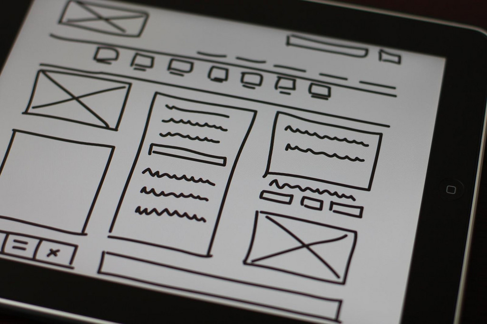

HCID 520 User Interface Software + Technology
Schedule
•
Reading
•
Homework
•
Grading
Whether you're a software designer, engineer, or user experience researcher, understanding what user interfaces are, how they're built, and what kinds of interfaces can exist is a critical literacy for collaboration and creativity. After all, user interfaces are a medium, like any other: painters need to understand paint, writers need to understand words, and anyone involved in designing, building, or understanding interactions with software needs to understand user interfaces.
By end of the course you will:
- Be able to describe all major user interface concepts and paradigms
- Use a theory of user interfaces to describe, analyze, and critique user interface technology
- Describe major classes of inventions in user interface software and technology
- Identify open questions in user interface technology
- Conducted detailed assessments of product opportunities for user interface innovations
Workload
Your weeks look like this:
- Monday: Come to class ready for discussion and activity
- Tuesday: Do your Wednesday reading
- Wednesday: Come to class ready for discussion and activity
- Thursday-Sunday: Do your Monday reading, then do your homework
Stay on top of reading so you have time to focus on homework.
Office Hours
I'm available to talk about jobs, careers, graduate school, research, class, and anything else. My office hours are always posted on the top of my faculty website. To guarantee I'll be around, write me in advance to secure a time.
Schedule
| Week 1 — Welcome |
| 1/3 | Lecture |
- Who am I? (10 min)
- How I will teach you? (5 min)
- Growth mindset
- Deliberate practice
- My role and TA's role in providing constructive feedback
- Your role in seeking feedback
- Why is this class required? (20 min)
- Syllabus overview (15 min)
|
| Week 2 — History and Theory |
| 1/8 | Lecture |
- Required reading (10 min): The history of user interfaces
- Selected reading discussion (15 min)
- Activity (45 min)
- Objective: analyze the implications of different visions
- Rationale: UX requires strategy and strategy requires vision
- Pair up (5 min)
- Read Bush's vision for the Memex (5 min)
- Create an alternative vision (20 min)
- Share your vision with another pair (5 min)
- If your vision had materialized, how would our interactions with computing be different? (10 min)
|
| 1/10 | Lecture |
- Required reading (10 min): A theory of user interfaces
- Selected reading discussion (15 min)
- Activity (45 min)
- Objective: practice using the theory to reason about user interfaces.
- Rationale: design critique requires analysis, which requires a theoretical lens
- Form ad hoc groups of three (5 min)
- Deconstruct a simple user interface (20 min):
- Reverse engineer a description of the collection of functions exposed by the user interface
- Identify the gulfs of execution for each function and the affordances the interface uses to bridge them.
- Identify the gulfs of evaluation for each function and the feedback the interfaces uses to bridge them.
- Present your deconstructions (20 min)
Homework 1 overview (10 min)
|
| Week 3 — User Interfaces as Mediation |
| 1/15 | Lecture |
|
| 1/17 | Lecture |
- Homework 1 due
- Required reading (10 min): How user interfaces mediate
- Selected reading discussion (15 min)
- Activity (45 min)
- Objective: reverse engineer mediation models
- Rationale: design critique requires analysis, which requires a theoretical lens
- Form ad hoc groups of three (5 min)
- Reverse engineer a description of the the metadata language or social cues exposed by the user interface (20 min)
- Present your deconstructions (20 min)
- Homework 2 overview (10 min)
|
| Week 4 — Interface Paradigms |
| 1/22 | Lecture |
- Required reading (10 min): Declarative interfaces
- Selected reading discussion (15 min)
- Activity (45 min)
- Objective: Critique a programming interface
- Rationale: Programming interfaces have tradeoffs; articulating them is key to deciding whether to allow something to be programmable.
- Form ad hoc groups of three.
- Make an account on If This Then That, a programming environment for writing service integration automation.
-
- Create an event that seems useful to at least one member of your group, and while you create the script, critique the following:
- What gulfs of execution do you see?
- What gulfs of evaluation do you see?
- Present the gulfs you discovered.
|
| 1/24 | Lecture |
- Homework 2 due
- Required reading (10 min): Interactive interfaces
- Selected reading discussion (15 min)
- Activity (45 min)
- Objective: Critique a game interface
- Rationale: While most interactive interfaces leverage design conventions from the original Xerox Star, video games are decidedly unconventional in their interaction designs.
- Form ad hoc groups of three.
- Find a web-based game
- Learn to play it, finding non-WIMP user interface elements.
- For each non-WIMP interface element:
- What gulfs of execution do you see?
- What gulfs of evaluation do you see?
- Could a WIMP interface element have been used instead?
- Present the gulfs you discovered.
- Homework 3 overview (10 min)
|
| Week 5 — Interface Abstractions |
| 1/29 | Lecture |
- Required reading (10 min): User interface software architecture
- Selected reading discussion (15 min)
- Activity (45 min)
- Objective: Identify how MVC is realized in code
- Rationale: Identifying the links between specific parts of a program and it's MVC elements will help make MVC more concrete.
- Form groups of two. Find someone who either has much more or much less web development experience than you.
- Visit this CodePen example.
- For each line of HTML, CSS, and JavaScript in the example, add a comment that tags it as either implementing the model, view, or controller of the user interface.
- We'll discuss each line of code as a class.
|
| 1/31 | Lecture |
- Homework 3 due
- Required reading (10 min): Accessibility
- Selected reading discussion (15 min)
- Activity (45 min)
- Homework 4 overview (10 min)
|
| Week 6 — Pointing and Text — Andy at Dagstuhl |
| 2/5 | Lecture |
- Required reading (10 min): Pointing
- Selected reading discussion (15 min)
- Activity (45 min)
|
| 2/7 | Lecture |
- Homework 4 due
- Required reading (10 min): Text-entry
- Selected reading discussion (15 min)
- Activity (45 min)
- Homework 5 overview (10 min)
|
| Week 7 — Probabilistic Input |
| 2/12 | Lecture |
- Required reading (10 min): Active input (touch, gesture, voice, muscle, etc.)
- Selected reading discussion (15 min)
- Activity (45 min)
|
| 2/14 | Lecture |
- Homework 5 due
- Required reading (10 min): Passive input (gaze, motion, etc.)
- Selected reading discussion (15 min)
- Activity (45 min)
- Homework 6 overview (10 min)
|
| Week 8 — Static Visual Output |
| 2/19 | Lecture |
- NO CLASS, President's Day
|
| 2/19 | Lecture |
- Homework 6 due
- Required reading (10 min): Typography, graphics, visualization
- Selected reading discussion (15 min)
- Activity (45 min)
- Homework 7 overview (10 min)
|
| Week 9 — Dynamic Visual Output, Physical Output |
| 2/26 | Lecture |
- Required reading (10 min): Dynamic visual output (animation, AR, VR)
- Selected reading discussion (15 min)
- Activity (45 min)
|
| 2/28 | Lecture |
- Homework 7 due
- Required reading (10 min): Physical output (2D printing, fabrication, tangible)
- Selected reading discussion (15 min)
- Activity (45 min)
- Homework 8 overview (10 min)
|
| Week 10 — Miscellany |
| 3/5 | Lecture |
- Required reading (10 min): Help
- Selected reading discussion (15 min)
- Activity (45 min)
|
| 3/7 | Lecture |
- Homework 7 due
- Required reading (10 min): Intellectual property
- Selected reading discussion (15 min)
- Activity (45 min)
- Homework 9 overview (10 min)
|
| Finals |
| 3/14 | |
|
Reading
There are two types of readings in this class. The first are required readings from the book I wrote, User Interface Software and Technology. When you read this, you'll need to come to class ready to demonstrate your knowledge of everything in the chapter, including any video under 10 minutes (longer videos are there for deeper learning). We'll start class by discussing any points of confusion in the chapter. Then, I'll give a quiz with a single question and if you answer it correctly, you'll get full credit. After the quiz, we'll discuss the right answer. If you miss class, you can makeup the missed quiz credit by writing me an email with a critique of the chapter containing at least two ideas for improvements.
The second type of reading is selected reading. You can choose any of the articles cited in the "Further reading" section of a chapter. Pick based on interest, then read the paper (or if it's a book, a chapter of the book), and distill the key insights of the paper into three sentences:
- Sentence 1: What the paper explained
- Sentence 2: A description of an idea the paper shared and how it changed your thinking.
- Sentence 3: What impact you believe this insight may have on user interfaces in the future.
Each submission should include the cited paper and then three sentences like this:
This paper described a new pointing device called a "mouse." I found the idea of mapping the motion of an object on two axes to a virtual coordinate system to be intriguingly general. I predict we'll see a diversity of mouse shapes to fit the diversity of hands and abilities.
For selected readings, you'll get 0.5 points for each of the three sentences, and anywhere from 0 to 0.5 points based on the pithiness of your writing (meaning it should be concise and forcefully expressive). The example above is pithy enough for full credit.
Homeworks
Whereas the readings in the course will give you a strong conceptual foundation for user interfaces, the homeworks will help you practice a key skill in interaction design, UX research, and front-end engineering: assessing design opportunities. You'll do this over the course of several homeworks:
- Homework 1 (5 points): Discovering discoveries
- Homework 2 (5 points): Extracting insights
- Homework 3 (5 points): Analyzing interactions
- Homework 4 (5 points): Assessing maturity
- Homework 5 (5 points): Assessing feasibility
- Homework 6 (5 points): Assessing expressiveness
- Homework 7 (5 points): Assessing support
- Homework 8 (5 points): Assessing ownership
- Homework 9 (12 points): Forming recommendations
By the end of the course, you'll have deeply analyzed an user interface innovation for product viability.
Grading
There are 100 points you can earn in this class:
- Required reading quizzes (16 points)
- Selected reading summary (32 points)
- Homework (52 points): due each Monday before class
After rounding your points to the nearest even number, I'll map your 100 points to a 4.0 scale using the table below.
| ≥ 97 → 4.0 |
92 → 3.5 |
87 → 3.0 |
82 → 2.5 |
77 → 2.0 |
72 → 1.5 |
67 → 0.9 |
| 96 → 3.9 |
91 → 3.4 |
86 → 2.9 |
81 → 2.4 |
76 → 1.9 |
71 → 1.4 |
66 → 0.8 |
| 95 → 3.8 |
90 → 3.3 |
85 → 2.8 |
80 → 2.3 |
75 → 1.8 |
70 → 1.2 |
65 → 0.7 |
| 94 → 3.7 |
89 → 3.2 |
84 → 2.7 |
79 → 2.2 |
74 → 1.7 |
69 → 1.1 |
≤ 64 → 0.0 |
| 93 → 3.6 |
88 → 3.1 |
83 → 2.6 |
78 → 2.1 |
73 → 1.6 |
68 → 1.0 |
Late work receives no credit unless you can provide a note from a health care professional documenting the reason for your absence. If you miss a reading quiz due to sickness, you can make up the quiz credit by sending a critique of the reading to me within a week of the due date that reports at least three improvements to the content, including high level issues such as topics that should be discussed or points you think are wrong, to low-level issues including spelling, grammar, or clarity.